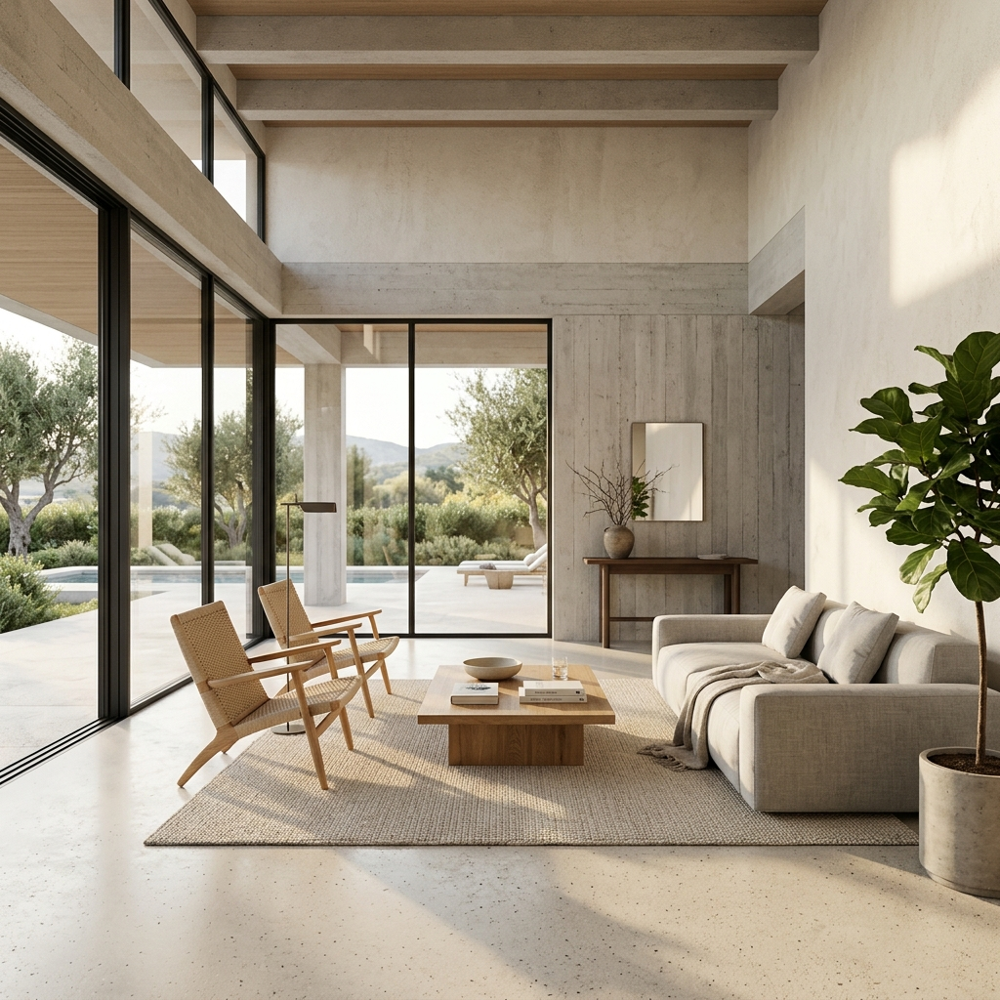

For a long time the polite framing on D5 Render was that it was a credible Twinmotion alternative with a generous free tier and a slightly unfamiliar studio behind it. That framing is out of date. The 2026 release cadence has put D5 on a different footing. It is no longer a cheaper option you tolerate. It is a real-time path-traced engine with an AI stack stitched into the same application, and for a practice that wants stills, walkthroughs, and styled exploration without juggling three tools, that combination is now worth a hard look.
The catch with any tool that ships fast is that not every feature deserves your project hours. So we did the only useful thing. We took a current residential scheme, a two-storey house with a difficult west elevation and a client who keeps changing the cladding spec, and we ran every AI feature D5 ships in 2026 against it. A full deadline week. What follows is what held, what did not, and where D5 still trails the tools we use every day.
Why D5 is suddenly worth a hard look
Two things changed in the last twelve months. The first is that real-time path tracing in D5 is now genuinely usable on a working machine, not a render farm. Bouncing light across an interior with believable falloff used to be the line where you stopped tuning in real time and committed to a long bake. That line has moved. On the residential project we tested, the lounge interior with afternoon west light through a deep reveal resolved cleanly in real time on a single-GPU workstation. That is the baseline that makes everything else interesting.
The second is that D5 stopped treating AI as a side panel. The AI denoiser, the AI lighting tools, and the D5 AI Generator are first-class controls inside the same scene you are lighting and framing. You do not export anything. You do not go to a browser. The asset library quietly began surfacing AI-tagged results, which sounds boring until you realise how much of a render week is spent searching for the right tree. Live links to SketchUp, Revit, Rhino, Archicad, 3ds Max, Blender, and Cinema 4D mean the model you are pulling from is the model you ship from. The whole stack now fits in one window.
The four AI features D5 actually ships in 2026
D5's marketing site lists more than four AI features if you count every sub-control. In practical use there are four that move the needle. The rest are sensible plumbing.
AI denoising
The AI denoiser is the feature you stop noticing within a day, which is the strongest possible compliment. It cleans up the speckle in low-sample real-time path tracing without smearing fine detail. Brick coursing stays legible. Carpet pile keeps its texture. The denoiser sits on top of the rendering loop rather than as a post step, so what you see in the viewport is what you frame for the still. For a residential interior with a lot of soft furnishing and mixed lighting, this is the single feature that made D5 viable as our primary engine for the week.
AI lighting
The AI lighting tools are a smarter answer to a problem every architect knows. The model is correct. The render still looks flat. D5's AI lighting analyses the existing scene and proposes a relight that keeps your sun position and your fixtures but adjusts intensities and bounces to lift the image. It is not a one-click hero shot. It is a useful first draft that gets you to a credible frame faster than dragging exposure sliders. On three of our six views it gave us a usable starting point in seconds. On the difficult west elevation it overcooked the contrast and we dialled it back. The control is there. The default is a touch too dramatic for residential work.
D5 AI Generator
The D5 AI Generator is the one that gets all the screenshots on social. You take a viewport capture, hand it to the Generator with a style prompt, and it returns a styled image conditioned on your geometry. For early-stage exploration this is genuinely fun. For deliverable work it is the weakest of the four. The image looks great. The fidelity to your model is materially worse than what Veras gives you, because D5's Generator is operating on a captured frame rather than the underlying geometry. The wing on the upper floor of our scheme migrated by half a metre in two of the six generations. That is the kind of drift you cannot ship in front of a planning officer.
AI-tagged asset library
The asset library does not advertise itself as an AI feature, but the 2026 update added semantic tagging that finds the asset you described rather than the one you remembered the keyword for. Searching for a sparse Mediterranean street tree returned a useful shortlist instead of forty generic oaks. Over a render week this saves time you do not realise you are losing. It is the most boring AI feature in the stack. It is also the one we missed most when we switched back to Twinmotion mid-test for a comparison.
Tested on a live residential project
Six views, one west elevation that has refused to flatter the design since schematic, two interiors, two aerials, and a street approach. We rendered each view through the D5 AI stack first, then through Twinmotion for parity, then ran a single comparison pass through a cloud img2img tool fed a flat D5 viewport capture.
The denoiser and the live path tracing carried D5 through the interiors without complaint. Both lounge frames were ready in real time and the AI denoiser kept the timber floor and the linen sofa reading honestly. The street approach and the aerials held up because the model fidelity was never in question, the engine was simply lighting the geometry. Where things got more interesting was the west elevation. AI lighting wanted to push the contrast for drama. With the proposed render strength dialled back to roughly sixty percent it produced the best frame we got out of the week. Twinmotion needed a manual exposure correction to reach parity. D5 won that view.
The D5 AI Generator earned its keep on a different task. The client wanted to see the same elevation in two cladding alternates that had not yet been modelled. The Generator returned credible explorations of a charred timber option and a warm render finish in roughly a minute each, both anchored to our existing scene. As exploration, useful. We did not ship those frames as deliverables. We modelled the agreed cladding and re-rendered through the path tracer.
| Step | D5 Render 2026 AI stack | Twinmotion equivalent | Cloud img2img on viewport |
|---|---|---|---|
| Real-time path tracing | Native, denoised in viewport | Path Tracer mode, slower iteration | Not available |
| Noise cleanup on stills | AI denoiser, on by default | Manual sample count tuning | N/A |
| Lighting first draft | AI lighting suggestion | Manual exposure and sun tuning | Inferred, often wrong |
| Styled exploration of alternates | D5 AI Generator, viewport-based | None native, third-party only | Strong, geometry drift |
| Asset search | AI-tagged library | Keyword library | N/A |
| BIM and modeller live link | SketchUp, Revit, Rhino, Archicad, 3ds Max, Blender, C4D | Revit, Archicad, Rhino, SketchUp | None |
Where D5 still loses to Veras and Twinmotion
Two specific places. The first is AI image generation depth. The D5 AI Generator is convenient because it lives inside your render application, but on geometry fidelity and material control it is behind Veras 4.3, and the gap is not small. If your AI render workflow is built around faithfully styling a documented model, Veras is still the right tool. D5's Generator is a sketching aid. Veras is a deliverable engine. Different jobs.
The second is the maturity of camera and animation craft. Twinmotion's camera path tools and its sequencer are still smoother than D5's, and for studios with a dedicated visualisation team that ship long animations every month, that gap matters. D5's video tools are competent. They are not yet the reason you would choose the application.
D5 is no longer the cheaper alternative. For a small practice running one project at a time, it is now the most complete single window in the category.
Our take, who should switch and who should not
If you are a small to mid-sized practice that ships mostly stills and short walkthroughs, that wants real-time path tracing without a separate denoise pass, and that occasionally needs to show a client two cladding options before lunch, D5 Render in 2026 is now the most defensible single-application choice in the category. The free tier is generous enough to test on a real project. D5 Pro and D5 Team are priced where a one-person studio can afford the former and a five-person team can afford the latter without rearranging the rendering budget.
If your visualisation work is animation-heavy, if you have a dedicated viz team with established Twinmotion habits, or if your AI render pipeline is built on Veras fidelity to BIM geometry, do not switch. Keep D5 as the second tool in your stack for the AI denoiser and the Generator alone. Both are worth having available even if D5 is not your primary engine.
The honest summary is that D5 has used the last twelve months to make the case that real-time rendering and AI styling belong in the same window. On a residential project with a deadline week, that case mostly held. The denoiser is essential. The lighting suggestion is a useful first draft. The Generator is a sketching tool that occasionally pretends to be a deliverable engine, and you have to know which mode you are in. The asset library is the silent win.
Take one current project this week and run it through D5's free tier. Pick three views you already have rendered somewhere else and rebuild them in D5 with AI denoising on, AI lighting as a first pass, and the Generator for one styled alternate. If the denoised path-traced frame is a faster path to your usual quality than your current tool, you have just found the missing window in your rendering week.
Tested by Vista Studios on a live two-storey residential scheme. No affiliate relationships. D5 Render 2026 with full AI stack, Twinmotion 2026 for parity, single cloud img2img pass for comparison. Six matched views, same materials, same week.